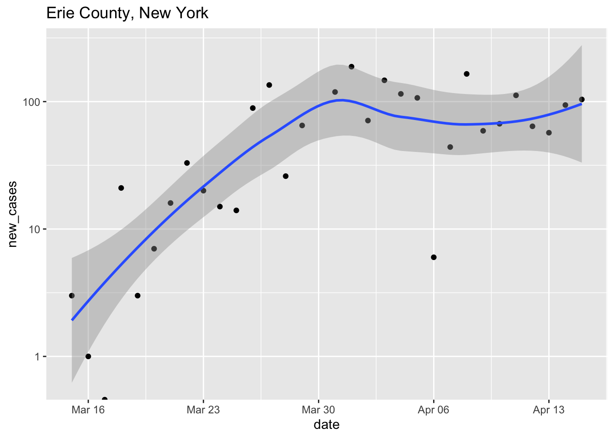

40 Days and 40 Nights
2020-04-23
Motivation
This is a WORK IN PROGRESS.
This course was suggested and enabled by Adam Kisailus and Richard Hershberger. It is available for Roswell Park graduate students.
Introduction
The word ‘quarantine’ is from the 1660’s and refers to the fourty days (Italian quaranta giorni) a ship suspected of carrying disease was kept in isolation.
What to do in a quarantine? The astronaut Scott Kelly spent nearly a year on the International Space Station. In a New York Times opinion piece he says, among other things, that ‘you need a hobby’, and what better hobby than a useful one? Let’s take the opportunity provided by COVID-19 to learn R for statistical analysis and comprehension of data. Who knows, it may be useful after all this is over!
What to expect
We’ll meet via zoom twice a week, Mondays and Fridays, for one hour. We’ll use this time to make sure everyone is making progress, and to introduce new or more difficult topics. Other days we’ll have short exercises and activities that hopefully provide an opportunity to learn at your own speed.
We haven’t thought this through much, but roughly we might cover:
Week 1: We’ll start with the basics of installing and using R. We’ll set up R and RStudio on your local computer, or if that doesn’t work use a cloud-based RStudio. We’ll learn the basics of R – numeric, character, logical, and other vectors; variables; and slightly more complicated representations of ‘factors’ and dates. We’ll also use RStudio to write a script that allows us to easily re-create an analysis, illustrating the power concept of reproducible research.
Week 2: The
data.frame. This week is all about R’sdata.frame, a versatile way of representing and manipulating a table (like an Excel spreadsheet) of data. We’ll learn how to create, write, and read adata.frame; how to go from data in a spreadsheet in Excel to adata.framein R; and how to perform simple manipulations on adata.frame, like creating a subset of data, summarizing values in a column, and summarizing values in one column based on a grouping variable in another column.url = "https://raw.githubusercontent.com/nytimes/covid-19-data/master/us-counties.csv" cases <- read.csv(url) erie <- subset(cases, county == "Erie" & state == "New York") tail(erie) ## date county state fips cases deaths ## 66314 2020-04-17 Erie New York 36029 1929 115 ## 69072 2020-04-18 Erie New York 36029 1997 115 ## 71840 2020-04-19 Erie New York 36029 2070 146 ## 74617 2020-04-20 Erie New York 36029 2109 153 ## 77398 2020-04-21 Erie New York 36029 2147 161 ## 80188 2020-04-22 Erie New York 36029 2233 174Week 3: Packages for extending R. A great strength of R is its extensibility through packages. We’ll learn about CRAN, and install and use the ‘tidyverse’ suite of packages. The tidyverse provides us with an alternative set of tools for working with tabular data, and We’ll use publicly available data to explore the spread of COVID-19 in the US. We’ll read, filter, mutate (change), and select subsets of the data, and group data by one column (e.g., ‘state’) to create summaries (e.g., cases per state). We’ll also start to explore data visualization, creating our first plots of the spread of COVID-19.

Week 4: Machine learning. This week will develop basic machine learning models for exploring data.
Week 5: Bioinformatic analysis with Bioconductor. Bioconductor is a collection of more than 1800 R packages for the statistical analysis and comprehension of high-throughput genomic data. We’ll use Bioconductor to look at COVID-19 genome sequences, and to explore emerging genomic data relevant to the virus.
Week 6: COVID-19 has really shown the value of open data and collaboration. In the final week of our quarantine, we’ll explore collaboration; developing independent and group projects that synthesize the use of R to explore data. We’ll learn tools of collaboration including git and github, and develop ‘best practices’ for robust, reproducible research. We’ll learn about writing ‘markdown’ reports to share our project with others.
Roswell Park Comprehensive Cancer Center, Martin.Morgan@RoswellPark.org↩
Roswell Park Comprehensive Cancer Center↩